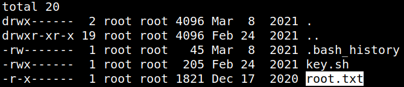
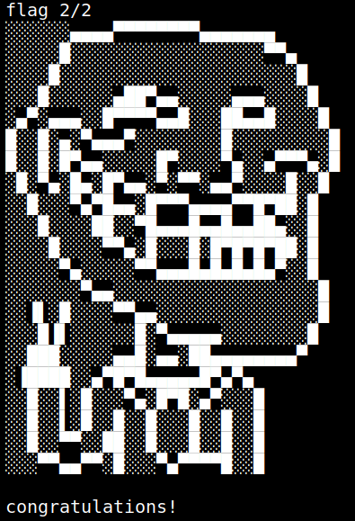

5.6 Catch the second flag.
1. Change to “root”. Password:
imjustdrifting31gill@driftingblues:/keyfolder$su root
2. Go to root directory and list the files.
root@driftingblues:/keyfolder#cd /root
root@driftingblues:~#ls -al
root@driftingblues:~#ls -al
Output:

3. Show the flag.
root@driftingblues:~#cat root.txt
Output:
